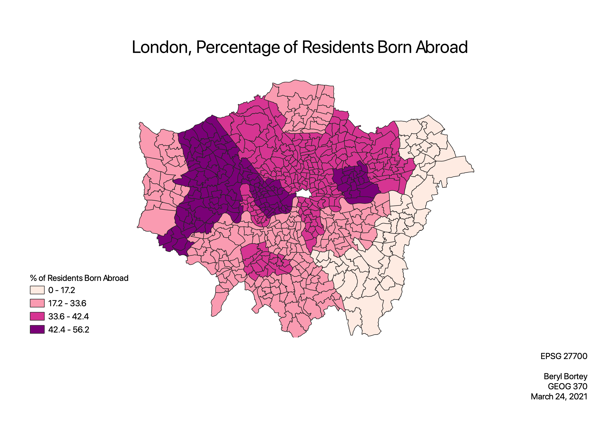

Homework 9: Choropleth
Beryl Bortey
This map of London depicts the percentage of foreign-born residents in each borough. As a capital and the largest city in the United Kingdom, I was interested in the spatial distribution of demographic factors. I selected the percentage of foreign-born residents because it’s a proxy for racial and ethnic diversity. The percentage offers a better representation because using counts as a metric would skew the choropleth in favor of boroughs with larger populations. Most notably, the highest concentration of foreign-born residents is in the western portion of London. In contrast, the eastern section of London contains the lowest percentage of foreign-born residents.
I didn’t include a scale because this is a thematic map, and there wouldn’t be a lot of added value from a scale. This map does not involve distances. Additionally, a north was not included because this is a city-level choropleth.

Data used for this project
CSV Dataset
Link to Vector
CSV Source